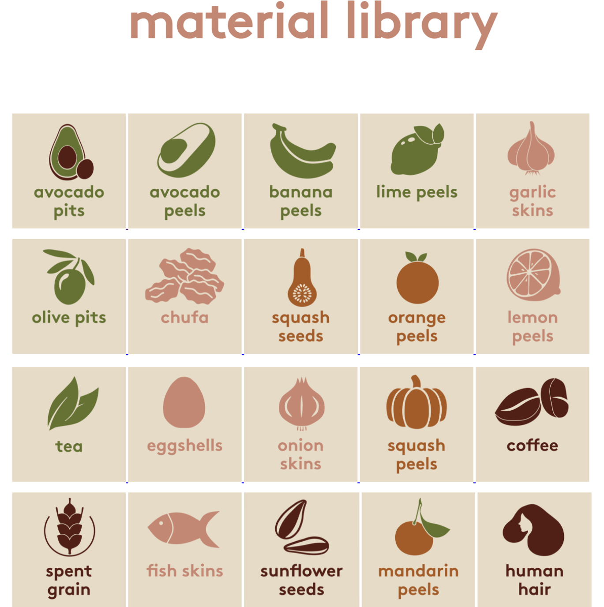

1ST INTERVENTION OF TERM 2
After the first term, I decided to start a new path for interventions, waste in general. And continue in parallel with the path that emerged in the last term, the holistic one.
I don´t know if they will merge in somepoint or they just complement eachother, but the meaning and bifurcation of the materials in physics (measurements) and subjective (senses) are relevant to me so show in experiences colored by that. Developing situations to think, to question, to observe, to play with, and so on; through the presumption of the spiritual and magic.
INTERVENTION 1: A WASTE DOMESTIC-CONTAINER
ME AS A DESIGN TOOL IN CONTEXT
°°°°°°°°°°°°°°°°°°°°°°Recycling Lifestyle°°°°°°°°°°°°°°°°°°°°°°°°°°°°°°°°°°°°°°°°
°°°°°°°°°°°°°°°°°°°°°°As a designer, I could see the potential of new materials°°°°°°°°°°°°°°°°°°°°
°°°°°°°°°°°°°°°°°°°°°°Document everything with the methods learned and practiced°°°°°°°°°°°°
CONTEXT
I have been segregating some of my food peels, during the last term to see what could I do next, without see it as an opportunity to document it. When we were ask to bring some to one of the seminars they worked perfectly, they were a lot, they were desidratated and free of bacterias.
So I restarted again, and, in some point of the last weeks I saw a bunch of carboard boxes with segregated materials in my bedroom, then I thought that maybe, all of them might need their own organized space in the flat.
The question was what can I do with them?; how much can I still contain in my room?; what if my roommates join?; what if my building join?. what if my block join?
In addition, the biomaterials seminars was running and many cool option appeared, and also, projects like "Remix El Barrio" that can offer many options and opportunities in this topic still having problems of how to sustaine theirself economicaly, as they said.
In that case, how can I join somehow to that community?, what If I offer the waste I collect?, how many of the collected is required to have options of develop "something"?. Because, what I have realized is that what "we" are looking for comercial stores because they already have the same of one product-waste in the same container or bag. Few of them segregate, and also, it is kind of hard because it require time and some requirements. Not to mencionate that it has to be daily, because they occupy space, and probably they smell weird if it is not; unless we find a solution that suits them.

WHAT DO I WASTE (MORE)?
This photos are from food waste. I don´t usually recycle non-biomaterials waste because they require more space. In addition, I collect the seeds of the food to reproduced them in the next season.
As a part of the last term experimentation, I tried worms compost to improve my abilities of recirculation processes; and also, because I wanted to generate electricity with them, but they died. Apparently, they were changed in their environment many times that they freeze, also, I bought them too soon. One of the reasons to not survive is the food I gave them, they weren't enough decompose.


WHAT IS THE PLAN?
The plan is to develop a WASTE CONTAINTER in my flat which it is going to be separated by types in the way I was doing it, with the option of mutate acording it is been used.
Made in cardboard in the begining to test it, then I think it could be interesting to develop it with the materials I collect.
Requirements depends on the type of collected material.
They will appear according the use, but the things I have already detected are:
Initial ideas....
1. Porous material, like cardboard or clay. Or, other material like plastic or acrilic but with holes.
2. Ventilation, the air has to get IN and OUT of the container.
3. Protection, some of the materials require to be close because they are more vulnerable to bacterias.
4. Divided by size of the waste, and quantity of use.
5. Be aware that some of the materials dripping liquids.
6. Most of them has to be clean.
7. The smallest possible to be accepted in the flat.
8. Some of the peels like oranges smell good, try to put in a specific spot.
9. Have in mind the continuity of use of each material waste.
10.Find where to put them once they space of the waste containter is full. Who is experimenting and working with
these materials.
11. Most importat: select what materials I can collect.
Test it.
THE INTERVENTION
SPOT 1: IN THE FLAT
Once the container is installed; as a daily routine: the WASTE CONTAINTER must to be checked and fill the documentation paper check.
The idea of the intervention is to visualize the opportunity of the material to reincarnated in objects for design or art. And generate and engagement with the
people that contribute to collect.
Distribution an selected waste

SELECTED MATERIALS


FIRST MODEL

DOCUMENTATION
SPOT 2: MDEF CLASSROMM
After the speech of the Firt Intervention, Julia and Phippa appeared as a waste-group-of-collectors for the fab challenge and the WASTE-CONTAINER was install in the classroom, and also we have the idea to create a web for the community of waste in barcelona.
Distribution an selected waste

Website
+ List of materials we collect.
+ Each material might have:
- Recipes or link.
- Fisical or chemical properties or link.
- Holistic references or link.
- References or projects.
- Links to articles.
- Amount in weight and where is it.
+ Possibility of bartering.
+ All members in the community are able to post.

RESULTS
still in working progress
INTERVENTION 2: SMELLY FRUITS
ME AS A DESIGN TOOL IN CONTEXT
°°°°°°°°°°°°°°°°°°°°°°Love to play°°°°°°°°°°°°°°°°°°°°°°°°°°°°°°°°°°°°°°°°°°°°°°°°°°°°°°°°
°°°°°°°°°°°°°°°°°°°°°°Channeling of Akashic Records°°°°°°°°°°°°°°°°°°°°°°°
°°°°°°°°°°°°°°°°°°°°°°Document everything with the methods learned and practiced°°°°°°°°°°°°°°°°°
CONTEXT
WHAT IS THE PLAN?

THE INTERVENTION

DOCUMENTATION